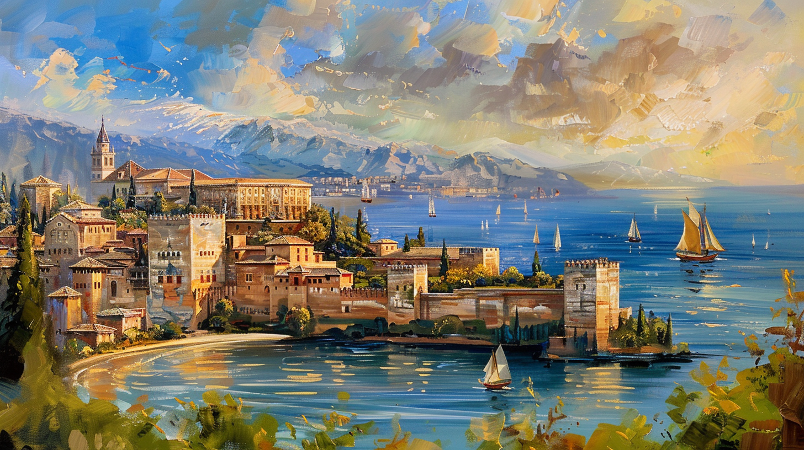

Fast achthundert Jahre lang lebten in Spanien Muslime, Juden und Christen nebeneinander. Wie das endete, und wohin die Vertriebenen gingen.

Zum Weiterlesen auf eine Station klicken
711 setzte ein muslimisches Heer über die Meerenge von Gibraltar. Innerhalb weniger Jahre war das Reich der Westgoten Geschichte. Was danach kam, nannten die Bewohner al-Andalus.
Al-Andalus war nie ein Staat mit klaren Grenzen. Es war eine Abfolge von Herrschaften über fast achthundert Jahre, mal geeint, mal in Kleinreiche zerfallen. Die stärkste Zeit lag zwischen 756 und 1031, als Córdoba Hauptstadt war, erst die eines Emirats, ab 929 die eines Kalifats. Die Stadt hatte gepflasterte Straßen, Straßenlampen und fließendes Wasser, als Paris noch ein Dorf am Fluss war.
Wichtiger als all das ist aber, wie das Zusammenleben geregelt war. Juden und Christen galten als Dhimmis, als Schutzbefohlene. Sie zahlten eine eigene Steuer, die Jizya, dafür mussten sie nicht ins Heer. Ihre inneren Angelegenheiten regelten sie selbst: eigene Richter, eigene Schulen, eigene Gemeinden.
Gleichberechtigt waren sie damit nicht. Aber sie hatten Rechte, und vor allem musste niemand seinen Glauben wechseln, um in Ruhe leben und arbeiten zu können. Wer verstehen will, was ab 1391 geschah, muss das im Kopf behalten.
Was das praktisch bedeutete, zeigt sich am besten an einzelnen Menschen.
Erst Leibarzt, dann Zolldirektor, schließlich zuständig für die Außenbeziehungen des Kalifen Abd ar-Rahman III. Er verhandelte mit Gesandten aus Byzanz und dem Frankenreich. Nebenbei finanzierte er in Córdoba eine Talmudschule. Er war Jude und blieb es.
Wesir von Granada, jahrzehntelang faktischer Regierungschef, dazu Heerführer im Feld. In den Nächten schrieb er hebräische Gedichte und Kommentare zum Talmud. Sein Sohn Joseph übernahm das Amt nach ihm.
Hofarzt und Verfasser eines dreißigbändigen medizinischen Werks. Der Band über Chirurgie, mit Zeichnungen der Instrumente, die er selbst entworfen hatte, wurde ins Lateinische übersetzt und blieb an europäischen Universitäten fünfhundert Jahre lang das Standardwerk.
Richter, Arzt und der wichtigste Aristoteles-Ausleger des Mittelalters. In den lateinischen Universitäten musste man seinen Namen nicht nennen: Man sagte einfach „der Kommentator", und jeder wusste, wer gemeint war.
Arzt und der bedeutendste jüdische Gelehrte des Mittelalters. Sein Werk verband arabische Philosophie mit jüdischem Recht. Geboren in derselben Stadt wie Ibn Rushd, nur eine Generation später.
Fünf Männer, drei Jahrhunderte, zwei Religionen, und eine Gemeinsamkeit: Keiner von ihnen musste konvertieren, um seine Arbeit tun zu können. Sie wurden nicht trotz ihres Glaubens geduldet. Ihr Glaube war im System vorgesehen.
Am deutlichsten sieht man die Folgen an den Übersetzungen. In Toledo saßen arabische, jüdische und lateinische Gelehrte am selben Tisch und übertrugen griechische, persische und indische Texte, meist über Umwege, vom Arabischen ins Kastilische, von dort ins Lateinische. Auf diesem Weg kamen Euklid, Ptolemäus, Galen und ein Großteil des Aristoteles nach Europa zurück.
Kein Feldzug, sondern ein Prozess über Jahrhunderte: Die christlichen Königreiche im Norden rückten nach Süden vor, in Schüben, mit langen Pausen dazwischen.
Wer sich dabei mit wem verbündete, hatte oft wenig mit Religion zu tun. Christliche Fürsten kämpften gegen christliche, muslimische gegen muslimische, und wechselseitige Bündnisse über die Glaubensgrenze hinweg waren nichts Besonderes.
Die Marken auf dem Weg: 1085 fiel Toledo. 1212 verlor ein muslimisches Heer die Schlacht bei Las Navas de Tolosa. 1236 fiel Córdoba, 1248 Sevilla. Übrig blieb Granada, und es hielt sich noch zweieinhalb Jahrhunderte.
Der härteste Einschnitt kam allerdings nicht von außen. Ab 1147 herrschten die Almohaden über al-Andalus, eine Bewegung aus Nordafrika. Ihr Gründer Ibn Tumart hatte sich selbst zum Mahdi erklärt. Sie schafften den Dhimmi-Status ab. Als Córdoba 1148 an sie fiel, packte die Familie des zehnjährigen Maimonides und ging. Ibn Rushd fiel 1195 bei ihnen in Ungnade; seine Bücher wurden verbrannt.
Sie gehören nicht in die Rechtstradition, von der dieser Text handelt, und man muss dafür nicht über Glaubensfragen streiten. Es reicht, was sie taten: Sie schafften den Schutzstatus ab und stellten in den eroberten Gebieten nicht nur Juden und Christen vor die Wahl, ihre Lehre anzunehmen, das Land zu verlassen oder zu sterben, sondern auch malikitische Sunniten. Maimonides floh vor ihnen, nicht vor sunnitischer Herrschaft.
Dies ist der Teil, ohne den der Rest nicht zu verstehen ist.
Im Juni 1391 brach in Sevilla ein Pogrom aus. Ausgelöst hatten es die Predigten des Archidiakons Ferrán Martínez. Von Sevilla sprang die Gewalt über nach Córdoba, Toledo, Valencia, Barcelona und in mehr als siebzig weitere Städte. Wer überlebte, hatte die Wahl zwischen Taufe und Tod. Zehntausende ließen sich taufen, bis 1415 kamen rund fünfzigtausend weitere hinzu. So entstand eine neue Gruppe: die Conversos.
Und hier kippt die Geschichte. Die Inquisition, ab 1478 eingerichtet, durfte gegen Juden gar nichts unternehmen. Sie war nur für Christen zuständig. Wer sich also hatte taufen lassen, um am Leben zu bleiben, geriet genau dadurch in ihre Reichweite, als Christ, dem man vorwarf, heimlich weiter jüdisch zu leben. Was folgte, waren Bespitzelung, Anzeigen aus der Nachbarschaft, Verhöre unter Folter und am Ende das öffentliche Ketzergericht.
Den letzten Ausweg nahmen die Statuten der limpieza de sangre, der „Blutreinheit". Sie fragten nicht mehr nach dem Glauben, sondern nach der Herkunft. Und gegen die Herkunft hilft keine Taufe. Wer jüdische Vorfahren hatte, blieb verdächtig, sein Sohn auch, und dessen Sohn ebenfalls.
Die Taufe war also kein Ausweg. Sie war der Eintritt in die nächste Verfolgung. Genau deshalb gab es 1492 überhaupt noch eine jüdische Gemeinschaft, die man vertreiben konnte: Viele hatten längst begriffen, dass Konvertieren nicht rettet.
Bei der Übergabe Granadas war den Muslimen vertraglich Religionsfreiheit zugesagt worden. Ab 1499 wurde dieser Vertrag gebrochen: erst Bücherverbrennungen in Granada, dann Zwangstaufen, 1502 in Kastilien und 1526 in Aragón. Danach verbot man die arabische Sprache, die Kleidung, die Bäder. 1568 bis 1571 folgten der Aufstand in den Alpujarras und seine Niederschlagung. Zwischen 1609 und 1614 schließlich die Ausweisung der Morisken, mehrere Hunderttausend Menschen. Der spanische Historiker Ruiz-Domenec nennt es die Zerstörung der spanisch-islamischen Gemeinschaft durch eine grausame ethnische Säuberung.
Am 2. Januar 1492 übergab Muhammad XII. die Schlüssel Granadas an Ferdinand und Isabella. Nach fast achthundert Jahren endete die muslimische Herrschaft in Spanien.
Keine drei Monate später, am 31. März 1492, unterschrieben dieselben beiden in derselben Alhambra das Ausweisungsedikt. Alle Juden des Landes hatten vier Monate Zeit: taufen lassen oder gehen. Wer blieb, ohne getauft zu sein, dem drohte der Tod.
Diese vier Monate waren eine Enteignung mit Uhr. Häuser, Werkstätten und Bibliotheken mussten binnen Wochen verkauft werden, und jeder Käufer wusste das, die Preise machte er. Gold und Silber durften nicht mitgenommen werden. Der Hoffinanzier Isaac Abravanel und der Steuerpächter Abraham Senior versuchten bis zuletzt, das Edikt zu kippen. Es gelang nicht. Senior ließ sich taufen und blieb. Abravanel ging.
Am 31. Juli lief die Frist ab, die letzten Schiffe legten in den Tagen darauf ab. Der 2. August 1492 war Tischa beAv, der Tag, an dem Juden der Zerstörung des Tempels gedenken.
Sie gingen nach Portugal, wo man sie fünf Jahre später erneut vertrieb. Nach Marokko, Algier und Tunis, in Überfahrten, die viele nicht überlebten. Nach Italien und in die Niederlande. Und nach Osten.
Darüber streitet die Forschung bis heute. Westliche Historiker nennen meist 40.000 bis 100.000; der Madrider Mediävist Vicente Alvarez schätzt rund 80.000. In türkischen Darstellungen liest man 120.000 bis 250.000, ältere Schätzungen gingen bis 800.000. Unstrittig ist nur, dass die Konvertierten die größere Gruppe waren, über 200.000, die blieben und der Inquisition ausgeliefert waren.
Kein christlicher Staat Europas nahm sie auf Dauer auf. Das Osmanische Reich tat es.
Sultan Bayezid II. schickte einen Erlass an die Statthalter seiner europäischen Provinzen. Darin stand, die spanischen Juden seien nicht etwa abzuweisen, sondern mit voller Aufrichtigkeit aufzunehmen. Und wer sich nicht daran halte, wer die Ankommenden schlecht behandle oder ihnen auch nur den kleinsten Schaden zufüge, werde mit dem Tod bestraft.
Angesiedelt wurden sie in Istanbul, Selanik, Edirne, Bursa, Amasya und Manisa. Sie kamen dort nicht in leere Städte: Seit byzantinischer Zeit lebten hier bereits die griechischsprachigen Romanioten, jüdische Gemeinden mit eigener, viel älterer Geschichte.
Auch die muslimischen Flüchtlinge aus Spanien wurden aufgenommen. In Istanbul wies man ihnen Galata zu, rund um die frühere Kirche Saint Dominicus, heute die Arap Camii, die Arabische Moschee. Sie bekamen ein Haus, Hausrat und Arbeit. Das Gebäude steht bis heute.
Was daraus wurde, lässt sich an drei Daten ablesen. 1493 richteten die Brüder David und Samuel Ibn Nahmias in Istanbul die erste Druckerei des Reiches ein. Bis 1519 hatte Selanik nach den osmanischen Steuerlisten eine jüdische Bevölkerungsmehrheit, man nannte die Stadt später das „Jerusalem des Balkans". Und aus dem Kastilisch der Vertriebenen wurde Ladino, das diese Gemeinden bis ins 20. Jahrhundert sprachen.
Damit schließt sich der Kreis. Menschen, die man aus Córdoba und Sevilla vertrieben hatte, weil sie nicht konvertieren wollten, lebten hundert Jahre später in Saloniki und Istanbul. Und mussten es dort weiterhin nicht.
Die Aufnahme hatte auch handfeste Gründe. Das Reich brauchte Handwerker, Händler und Ärzte, und es bekam sie. Die Aufgenommenen lebten als Dhimmis mit Jizya-Pflicht, nicht als Gleiche. Und dieselbe Verwaltung kannte die sürgün, die Zwangsumsiedlung, denn nach 1453 hatte sie romaniotische Juden nach Istanbul verpflanzt. Beides gehört dazu.
Der Satz, Ferdinand mache sein eigenes Land arm und das osmanische reich, wird Bayezid gern zugeschrieben. Er steht aber in der Chronik des Elijah Capsali von 1523, und dort heißt es, der spanische König habe am Istanbuler Hof als Narr gegolten. Die Türkische Historische Gesellschaft weist selbst darauf hin, dass die Zuschreibung an Bayezid nicht stimmt. Der Erlass an die Statthalter ist ohnehin der bessere Beleg: Er ist Politik, nicht Rhetorik.
Diese Seite lebt von Genauigkeit. Wer einen Fehler findet, eine Quelle vermisst oder einen Vorschlag hat, darf ihn gerne hier hinterlassen.
0 / 500
Öffnet Ihr E-Mail-Programm mit vorausgefülltem Text. Falls das nicht funktioniert: direkt schreiben.